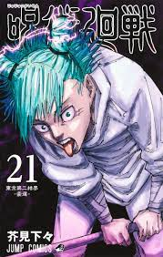
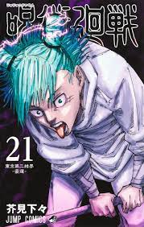

Lectura
Sobre mi experiencia
Con respecto a esta actividad, no puedo decir que sea alguien que tenga muchos conocimientos sobre otras lecturas o que sea una persona que se ponga a hacer un análisis preciso sobre todas las cosas que pasen, sin embargo, me gusta leer para matar el tiempo y hacer teorías de lo que se puede venir a futuro o simple mente comparar mi experiencia de lo leído con reseñas que veo en internet para saber las opiniones de otras personas.

Como me empezo a gustar este pasatiempo?
Bueno, primero quenada considero que es normal que muchos niños en la infancia no vean la lectura como pasatiempo, sin embargo, todo depende de cómo se sumerja en la lectura, en mi caso yo empecé a través de historias cortas y con dibujos con el fin de llamar mi atención y mantenerme entretenido ya que no me pondría a pensar en el montón de texto que hay por leer, con esto me refiero a que por lo menos en un principio no era capaz de leerme historias demasiado largas y no fue hasta que entre a básicos que me tome más enserió esta actividad.
Preferencias
En cuanto a historias mis favoritas siguen siendo los relatos cortos o aquellos que cuenten con imágenes, con el fin de que siempre pueda tener un punto de referencia o hacerme una idea más clara de cómo es el mundo en la historia que estoy leyendo, sin embargo no me atraen mucho las historias que se ponen a relatar con detalle ciertas cosas que no aportan mucho a la historia.


 
